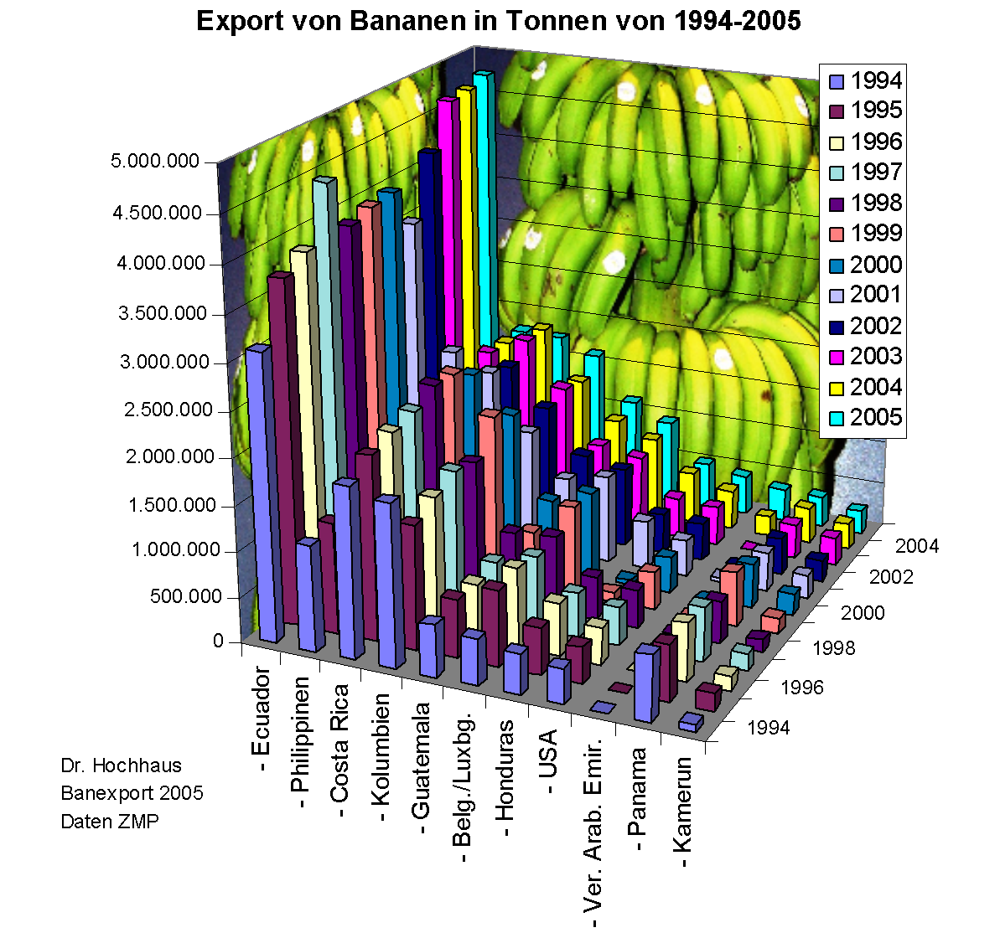

DH 102 // Text analysis tools
Mackenzie Brooks
October 2, 2018
data visualization
A method of deforming, compressing, or otherwise manipulating data in order to see it in new and enlightening ways. A good visualization can turn hours of careful study into a flash of insight, or can convey a complex narrative in a single moment.
Historian's Macroscope
But...
Visualizations can also lie, confuse, or otherwise misrepresent if used poorly.
Historian's Macroscope
what makes bad data viz?


what makes good data viz?
- appropriate chart type
- reasonable colors
- labels/legend
- but not too crowded
- scaled for data
Data Viz Examples
Teams
| team 1 | team 2 | team 3 | team 4 |
|---|---|---|---|
| Bancks Anne Mary Hampton Peyton | Gunnar Ian Amanda Maggie | Duncan Karel Conner Kathleen | Rich Madeline Charlie Jenna |
Text analysis tools
- AntConc (team 1)
- Topic Modeling Tool and/or Mallet (team 2)
- Lexos (team 3)
- Voyant (team 4)
Evaluation questions
- Who created this tool?
- What documentation is available?
- How do you input/output data?
- What visualization options are available?
- What types of questions does this tool enable?
Project planning
- What is my research question or topic?
- What are the biggest problems I have found with the data? What are realistic solutions?
- What methods/tools am I interested in using?
- What resources do I need?
- What are my next steps? Break them down!